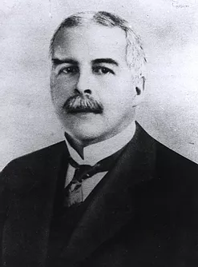

Gilbert Lewis fue el primer cientifico que propuso la idea de que los átomos podían permanecer unidos comparando pares de electrones. Por ello creó el simbolismo de las estructuras. La teoría del enlace amplio propuesta por Lewis sirvió para agrupar en un solo concepto todos los tipos de enlaces químicos. De esta forma se logró demostrar las relaciones existentes entre sustancias iónicas, moleculares, covalentes y metálicas. Hasta ese momento estos elementos no habían tenido conexión conceptual alguna.
